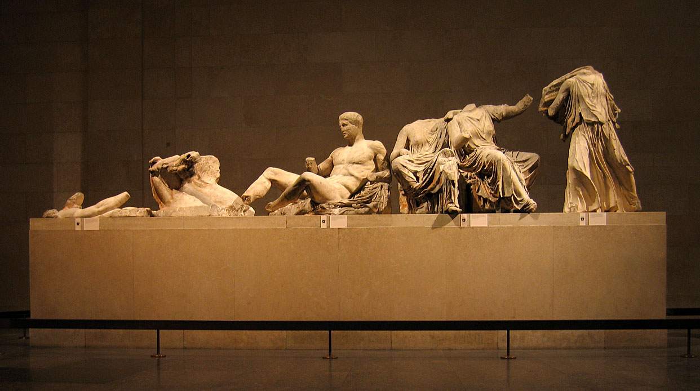
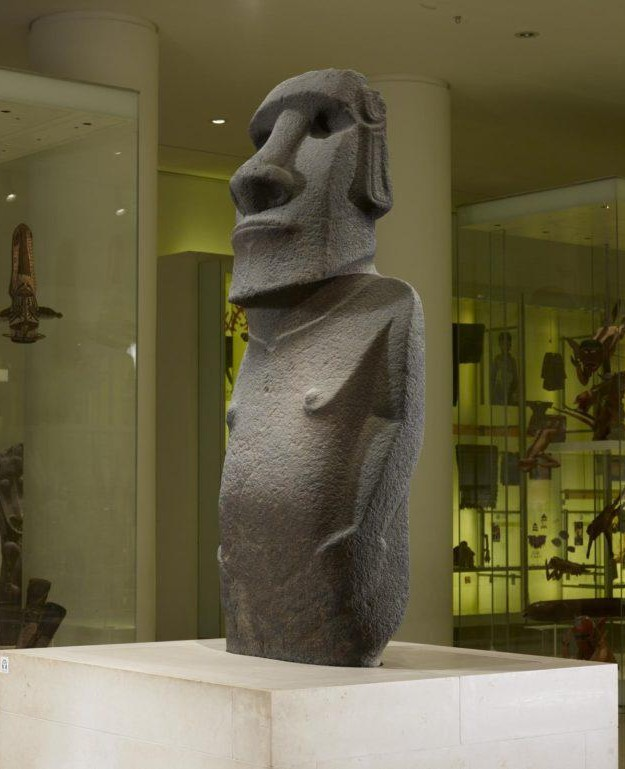

The British Museum is an institution famous for many things; chief among them, its vast, multicultural collection of immense historical significance, as well as the fact that it hosts many notoriously contested objects.
The multicultural aspect is so integral to the Museum, in fact, that anyone visiting will inevitably come upon a curious realization; hardly anything on display at the British Museum seems to be of British origin.
In light of the UK government’s recent proposal regarding the potential charging of international visitors at national museums, including the British Museum, a question naturally raises:
How British is the British Museum? And crucially, what would be left of it if every object of foreign origin was repatriated?
Here’s what the data has to show.
* "British" = recorded production place is UK or constituent nation · 46% of objects have no production place recorded — see Section 06
1 in 5 objects on display is British
All 45,185 objects on display, clustered by where they were made. Each dot represents 10 objects, and the United Kingdom sits at the centre.
22,528 objects — the faint outlined cluster — have no recorded production place at all. The museum itself simply hasn't catalogued where they were made.
Of the objects with a known origin, just 19.1% were made in the United Kingdom. Watch the British cluster pull away from everything else.
Among the 26,239 objects with a known production place.
It is worth noting that many of the museum’s foreign items are inextricably tied to the UK’s colonial past and status as a great power. India, for example, was a british colony for almost 200 years, while modern Greece and Britain were never on equal ground, power wise.
For those visiting in a hurry, the Museum has curated a list of 12 must-see highlights. The punchline? Not one of them is British...
Source: British Museum · ■ Contested = formal repatriation requests made

One of the Museum’s most prominent highlights, the Parthenon Sculptures, is also one of the most famously contested objects from the collection. The centuries-old issue spans not only the questionable manner of acquisition, but also the multiple rejected formal requests of repatriation.
“The sculptures were removed legally by Lord Elgin from the Parthenon, as a permit from the governing authority in Greece was granted.”
Click on the cards below to find out about the issues with the above statement:
During the sculptures’ removal (1801-1805), Greece was under the Ottoman Empire’s rule. Arguing that the artefacts were legally obtained because the occupying force permitted it constitutes a logical fallacy that overtly ignores historical context.
Turkey officially stated historians have not been able to find a ‘firman’ proving that the sale was legal, publicly rejecting the UK’s claim that Lord Elgin had received permission from Ottoman authorities for the removal.
Greece, ever since gaining independence from the Ottoman Empire in 1830, has made multiple requests for the repatriation of the Parthenon Sculptures:
Since 1987, the issue has been included in UNESCO's official agenda, to be discussed every 2 years. Additionally, 25 foreign national committees for the return of the Parthenon Sculptures are presently active. Many petitions and resolutions have also voted for the sculptures' repatriation.
Still, the British Museum has not responded in any substantial manner, attempting instead to appease critics through seemingly altruistic statements regarding its mission of embodying a 'world-museum' that provides access to 'shared human history' with 'the widest possible public', with the Trustees even discouraging UNESCO involvement.

‘Hoa Haka Nana'ia’, which translates to ‘stolen/lost friend’, is the name of one of the moai in the Museum’s collection.
For the Rapa Nui, the moai aren’t just statues, but represent a prominent ancestor whose spiritual power they carry, “functioning as a living connection between the living community and their predecessors”.
“The British taking the moai from our island is like me going into your house and taking your grandfather to display in my living room.”
— Anakena Manutomatoma, Rapa Nui elder. Source: BBCOfficially requested to be repatriated in 2018, and yet to return, the withholding of the moai despite its exceeding spiritual meaning to the Rapa Nui, belies the Museum’s blatant disregard of the very culture it claims to respect and understand.
Beyond where objects were made, we looked at where they were physically found or excavated. This is the geography of the museum's collecting history — distinct from, but related to, the production place data.
"46% of all on-display objects have no recorded production place. For every object — with or without a known origin — we asked where it was found"
Findspot ≠ production place · these are kept as separate datasets throughout"The UK leads findspot data with 7,351 objects — but this means objects were found in Britain, not necessarily made there. A Roman coin from Suffolk was minted in Rome."
Pre-1500 AD: real excavation sites · Post-1500 AD: often dealer / auction locationsThe UK's dominance of findspot data reflects the British Museum's vast collection of domestic archaeological material — Iron Age hoards, Roman-era finds, Anglo-Saxon burials — physically excavated from British soil. The remaining countries on the list largely reflect the museum's 19th and early 20th-century excavation programmes abroad.
For pre-1500 AD objects with both fields recorded. Where they were made vs where they were physically found. The distance between those two points is a story of trade, empire, and collection.
■ Stone = stayed in same country · ■ Gold = found in UK · ■ Blue = other cross-border flow · Flow width = object count · Pre-1500 AD only